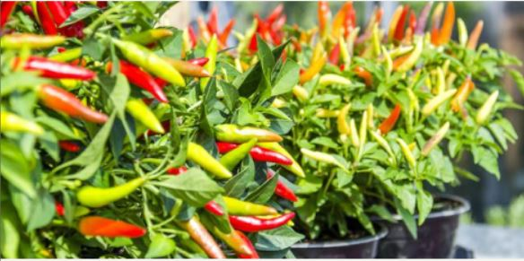

Panduan Umum Ternak Sapi Perah.
Memulai usaha ternak sapi perah di Indonesia gampang-gampang susah. Pasalnya negeri kita beriklim tropis namun jenis sapi perah yang beredar kebanyakan dari daerah sub tropis.

Panduan Umum Budidaya Jambu Air.
Jambu air merupakan tanaman yang berasal dari Asia Tenggara. Tanaman ini tergolong dalam suku myrtaceae (jambujambuan)

Cara Menanam Cabe di Polybag.
Cara menanam cabe tentu saja berawal dari bibit. Peratama-tama tentu saja anda harus memiliki bibit cabe yang berkualitas. Cukup mudah memilih bibit cabe.